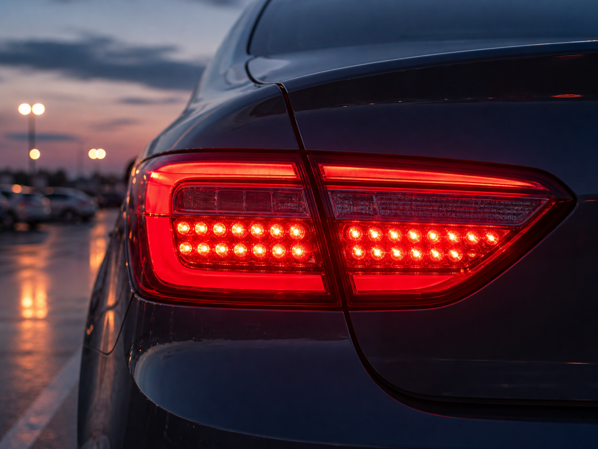
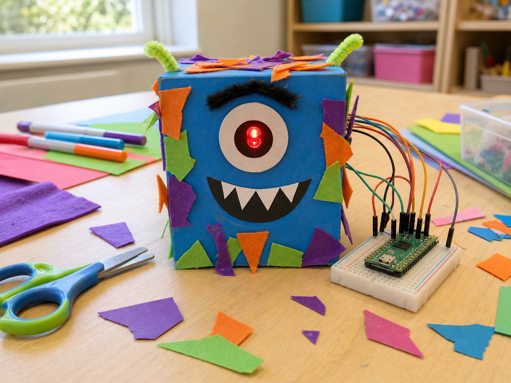
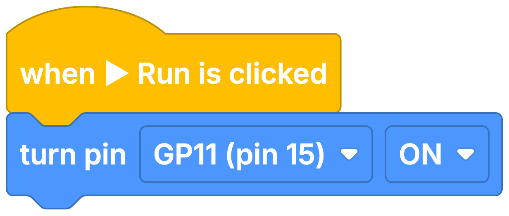

Car brake light
DetectBrake control signal
DecideIs braking requested?
DoLight the red LEDs
An LED is a tiny light that your code can switch on, switch off, or blink.
LED stands for light-emitting diode. It glows when electricity flows the right way through it, so the long leg and the short leg matter.
Your projects can use LEDs to show a warning, celebrate something, or tell people what is happening.


